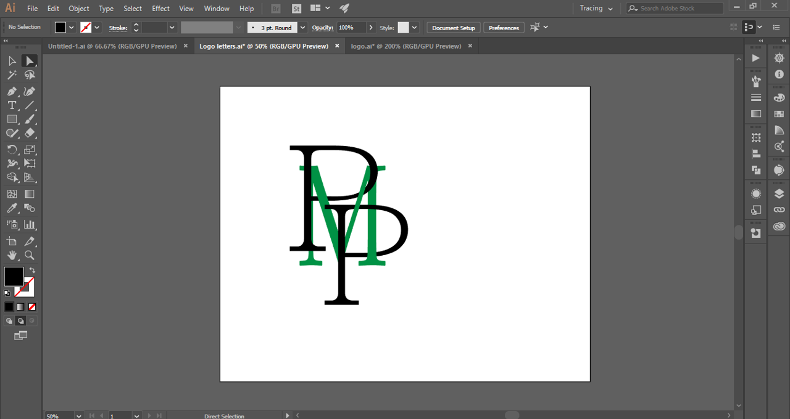
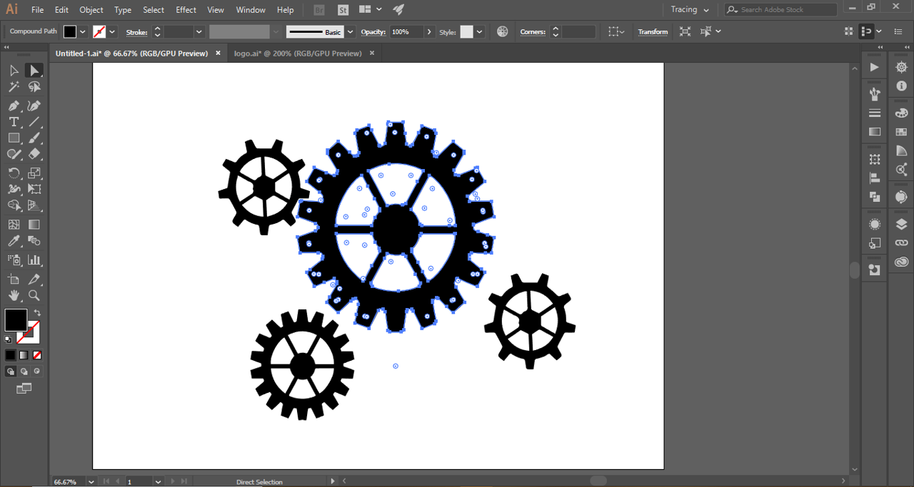
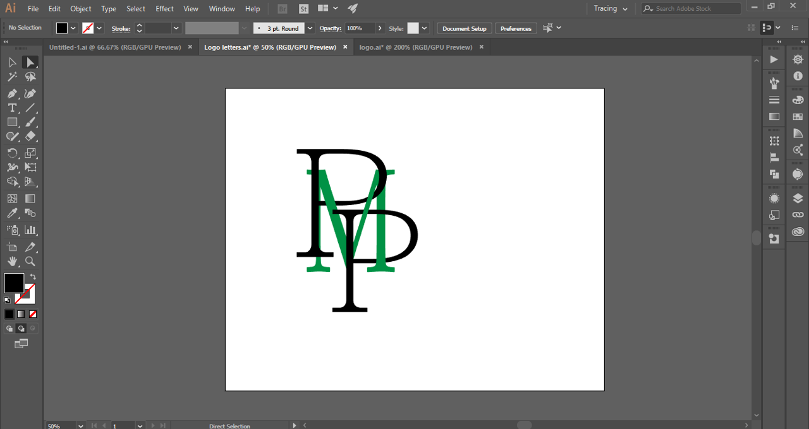
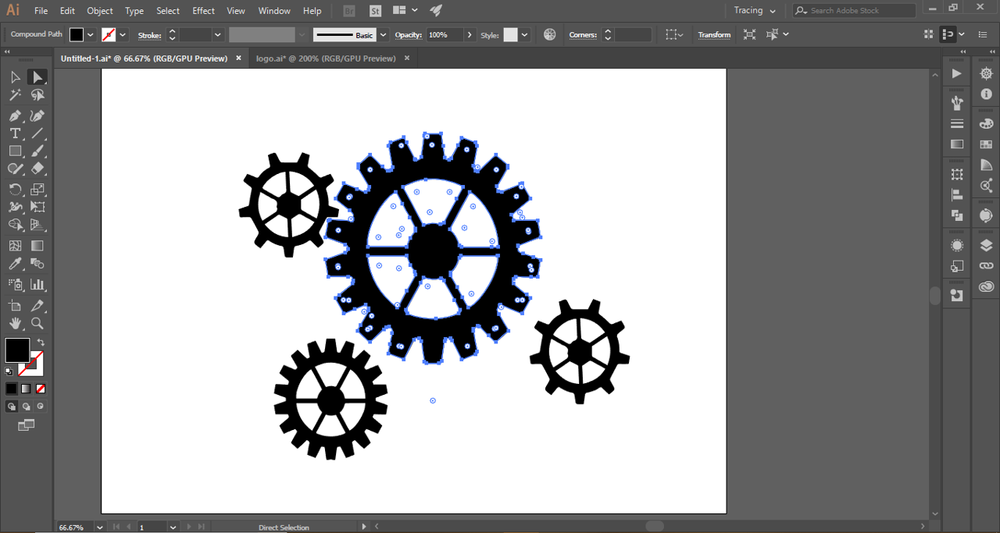
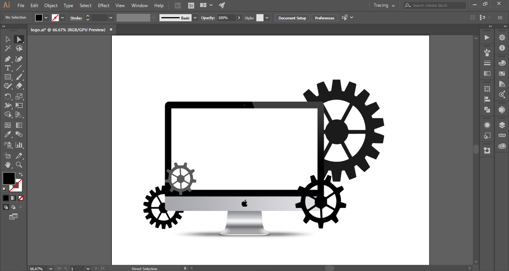
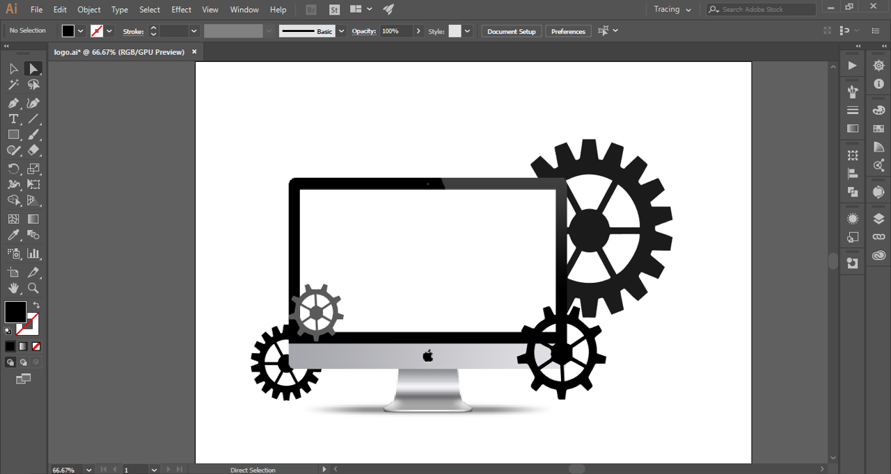

Graphic Design
Project.
 



 


Overview.
While I don’t have very much experience in graphic design, I am still able to create and complete any project or idea on hand. Using some of my basic skills in adobe Illustrator and graphic design.
In the example above, I demonstrate how I was easily able to design the logo for this website from scratch using some simple skills in adobe illustrator and a free iMac vector image that I was able to find online. Using the world-famous New York Yankees logo as inspiration, I design a similar logo that combines all three of my initials into one intertwine symbol. Utilizing the layers, color wheel and shape feature on adobe illustrator, as well as the magic eraser tool I was able to create the center piece of my design. Once that was completed, I watch a few YouTube videos on how to trace images using adobe illustrator to get the gear like shape vector images that I would need in order to bring life to my design. Having the gear like vector shape objects was really crucial to my design process, because once I had all the ingredients to the design, I sketched in my notepad. I was quickly able to combine all three designs elements into one and really make my logo come to life, exactly how I wanted it.
Skills Learned
Some of the skills learned were.
Import skills I learned from creating my own logo was using my available resources like the internet and YouTube to gain any particular skill to accomplish this assignment. Not only this, but I also learned how to turn simple letters into shapes in order to be formatted and intertwin together. I also learned the importance of the layering feature on adobe illustrator, as well as the very helpful magic eraser tool that can make any shape turn into negative space on any selected design. I also learned about the importance of color balancing and several efficient ways to use negative space in order to softened the design and attract the users attention to it.
Other Designs:
Friend's Startup
Image Art
This designed was created to be printed on a T-Shirt, to promote my friend's startup idea.

V's Nails Designs
Logo
This is another example of a different logo I created for my sister's side business website.
The Burgundy Elephant
Logo
This was the logo of a clothing brand website, I created a few years ago.